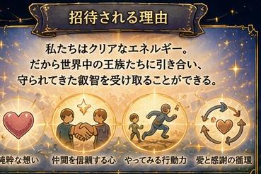
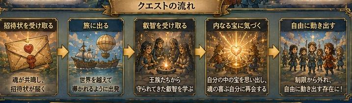
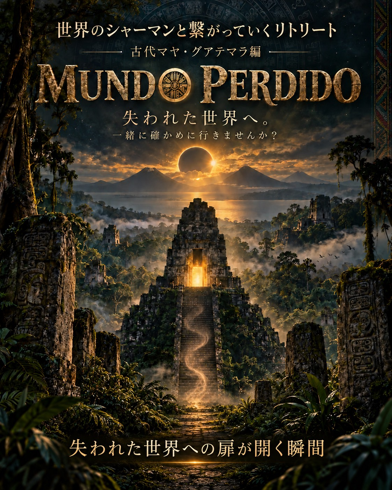
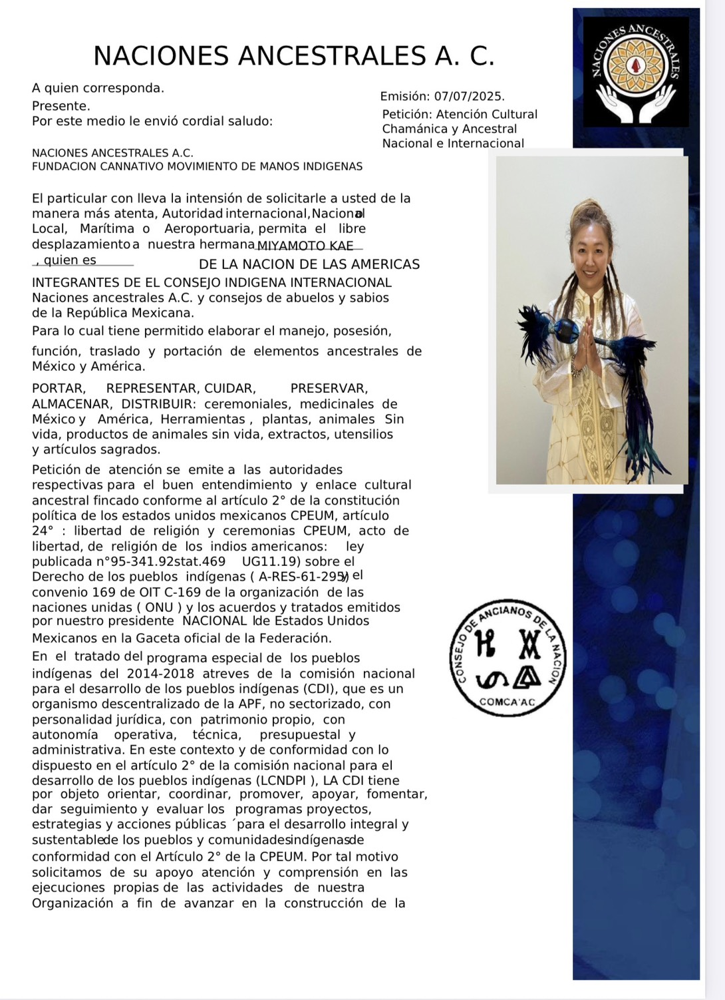

Challenge Accepted?
世界には、一般には立ち入ることのできない場所があります。
その扉を開く鍵は、お金ではなく「信頼」。
KAEは、現地の王族や神官、シャーマン、先住民族とのご縁を大切に育みながら、特別地域への通行許可や招待をいただいてきました。

あなたも、このクエストに挑戦できます。
通行許可書を持つKAEが、あなたを"特別地域"へご案内します。
さあ、新しい世界への招待状を手に入れましょう。


古代マヤの叡智が、今も人々の暮らしと祈りの中に息づくグアテマラ。
3つの火山に囲まれた神秘の湖・アティトラン湖。そして、深いジャングルの中に巨大な神殿が眠る、古代マヤ文明の都市・ティカル遺跡。
ティカルには、
ムンド・ペルディード「失われた世界」
と呼ばれる場所があります。
失われたのではなく、ただ、私たちから見えないように隠されているだけなのかもしれない。
私たちなら、その隠された世界を見つけられるような気がするのです。
古代マヤの人々は、何を見て、何を知っていたのでしょう。
一緒に確かめに行きませんか?
このたび、現地と太いパイプで繋がることができました。
そして、マヤの長老からのご招待で、通常の観光では受けることのできない儀式や、観光客は立ち入ることのできない特別な場所へ、案内していただけることになりそうです。
これは、遺跡や美しい景色を巡るだけの旅ではありません。
今も受け継がれているマヤの祈りに触れ、火山と湖、ジャングルと古代神殿の中で、自分の奥深くに眠る記憶と繋がっていく旅。
世界各地のシャーマンや先住民族の叡智と繋がりながら、私たちの中にある本来の感覚を呼び覚ましていく――。
そんな特別なリトリートになりそうです✨
日程や詳しい内容は、まだ決まっていません。
今の段階でご連絡いただいた方には、日程や滞在日数などのご希望を伺い、できる限り反映しながら旅をつくっていきたいと思っています😊
なぜかグアテマラが気になる。
マヤの叡智に惹かれる。
「失われた世界」という言葉に、心が反応した。
そんな方は、ぜひKaeまでご連絡ください。
まだ形になる前だからこそ、ここから一緒に、この特別な旅を創っていきましょう🌏✨
ハワイ島
王族しか立ち入ることのできない聖域へ。
王族の谷をはじめ、限られた人しか足を踏み入れられない場所で、王族に受け継がれてきた祈りや叡智に触れ、本来の自分と繋がる特別な体験をします。
火山・海・星空。自然そのものが神殿となる島で、自分の原点を思い出すクエストです。

メキシコ
シャーマンの叡智に触れ、本来眠っている能力を目覚めさせる旅。
砂漠と海に囲まれた壮大な大自然の中で、先住民族コムカック族との交流や、シャーマンスクールとのご縁をつなぎます。
自然と共に生きる智慧を学びながら、シャーマンの導きのもと、自分自身の感覚を研ぎ澄まし、本来持っている感性や能力を少しずつ開花させていきます。
秘境でのリトリートを通して、魂の次元を引き上げ、本来の自分を思い出す――。
それは、自然と一つになり、自分自身の可能性を解き放つ探検です。


私はメキシコの先住民族団体 NACIONES ANCESTRALES A.C. より、
「INDIGENOUS MEDICINE WOMAN(先住民族のメディスン・ウーマン)」
として正式に認定・推薦を受けています。
また、国際先住民族評議会の一員として登録され、祖先から受け継がれてきた伝統文化や儀式、祈りを継承し、人と人、文化と文化をつなぐ役割を担っています。
活動内容
認定文書には、私が次のような活動を行う者として紹介されています。
- 先住民族に伝わる儀式・祈りの実践
- 祖先文化・伝統文化の継承
- 神聖な儀式用品・祭具の管理と保全
- 伝統植物・薬草・自然との調和を大切にした文化活動
- 国際的な文化交流と先住民族同士の架け橋となる活動
- 儀式や伝統文化に関する指導・紹介・保存活動
- 世界各地の先住民族との交流・文化継承活動
儀式で扱う伝統文化
認定文書では、祖先文化に関わる以下のような神聖なものを扱う活動についても記載されています。
- 神聖な羽
- 天然石・水晶
- 神聖な杖
- 儀式用の楽器
- 貝殻
- 薬草・植物
- コパルなどの天然樹脂
- 儀式で用いる祭具や手作りの神聖な道具
私の役割
祖先から受け継がれてきた叡智を未来へつなぎ、人と自然、人と人、国と国を結ぶ架け橋になること。
そのために世界中の先住民族や王族、神官のもとを訪れ、受け継がれてきた叡智を学び、それを次の世代へと繋ぐ活動を続けています。
インド・マニプール
純粋な愛が息づく秘境へ。
神々と共に暮らす人々。豊かな自然。古くから受け継がれてきた文化。
この地では、日常を離れ、自然と共鳴しながら、自分自身のエネルギーを整え、新しい自分へと生まれ変わる時間を過ごします。
心・身体・魂。すべてのエネルギーを入れ替え、軽やかな自分で次の人生のステージへ進むためのクエストです。

このクエストは、誰でも挑戦できます。
ただし、訪れる場所によっては現地からの招待や入域許可が必要になります。
その手続きや現地との橋渡しは、KAEが責任を持ってサポートします。
「行ってみたい。」
その想いが、この冒険のスタートです。